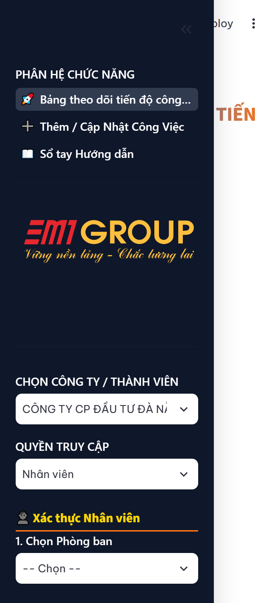
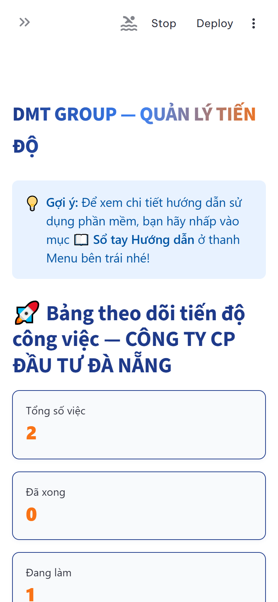
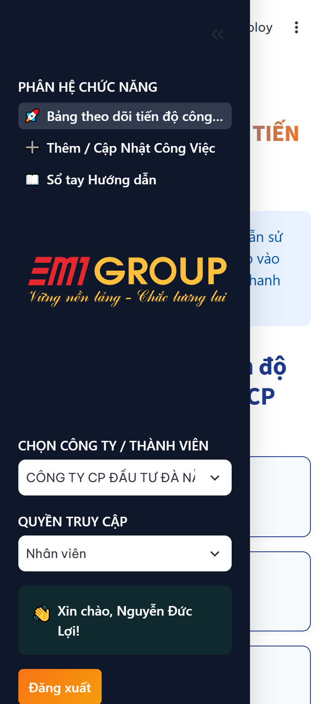
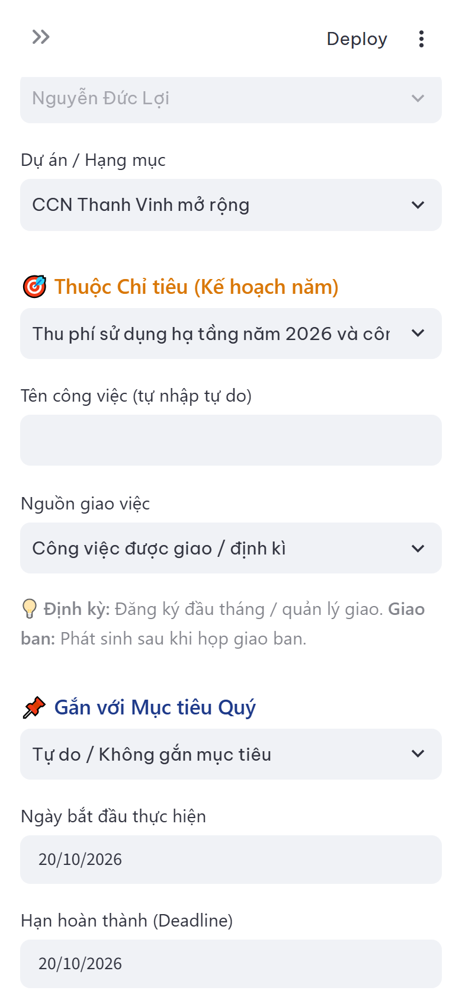
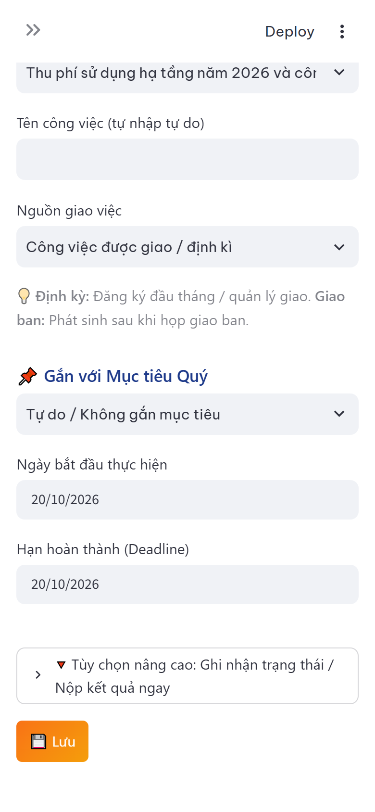
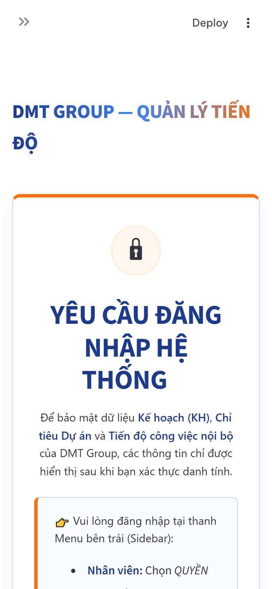

Để mở phần mềm nhanh như một ứng dụng (App) mà không cần mở trình duyệt và gõ lại link mỗi ngày, các anh chị làm theo mẹo 10 giây sau:
Mở link phần mềm ➔ Chạm vào nút Chia sẻ (biểu tượng hình vuông có mũi tên chỉ lên ở dưới đáy) ➔ Cuộn xuống chọn "Thêm vào MH chính" (Add to Home Screen) ➔ Bấm Thêm.
Mở link trên Chrome ➔ Chạm vào dấu 3 chấm góc trên bên phải ➔ Chọn "Cài đặt ứng dụng" hoặc "Thêm vào Màn hình chính".
✨ Kết quả: Ngay lập tức trên màn hình điện thoại của bạn sẽ xuất hiện icon của phần mềm DMT Group. Mỗi lần cần làm việc chỉ cần chạm vào là mở ngay!
| Nội dung | ❌ Cách làm cũ (Thủ công / Zalo) | ✅ Nguyên tắc mới trên phần mềm |
|---|---|---|
| 1. Nguồn gốc việc | Tự nghĩ việc rời rạc, làm việc sự vụ không rõ phục vụ mục tiêu nào của Ban. | Gắn liền Kế hoạch năm: Chọn Dự án ➔ Chọn Chỉ tiêu Ban ➔ Nhập tên việc cụ thể. |
| 2. Trách nhiệm hai chiều | Coi báo cáo là việc của nhân viên; sếp giao việc miệng qua Zalo dễ quên, không theo dõi việc sếp. | Trách nhiệm 2 chiều: Cả sếp và nhân viên đều làm việc; sếp phân rã chỉ tiêu và tự tạo việc của mình. |
| 3. Cập nhật tiến độ | Dồn toa cuối tháng mới cuống cuồng nhớ lại; vướng mắc để dồn cuối kỳ mới vỡ lở. | Cập nhật Real-time: Báo cáo ngay khi làm; có nguy cơ trễ hạn báo sớm để Ban hỗ trợ. |
| 4. Nghiệm thu kết quả | Báo 'Đã xong' bằng miệng hoặc giấy tờ chung chung; sếp duyệt theo cảm tính. | Minh chứng thực tế: Bắt buộc đính kèm File/Link minh chứng; nghiệm thu theo kết quả thực tế. |
| 5. Cấp độ đánh giá | Ngộ nhận: Xong việc cá nhân là tưởng Chỉ tiêu Ban xong; dẫn đến số liệu ảo. | Rạch ròi 2 cấp độ: Việc cá nhân xong KHÔNG mặc nhiên là xong Chỉ tiêu; Quản lý nghiệm thu Master View. |
Giao diện di động tự động thu gọn bảng điều khiển sang bên trái để tối ưu diện tích màn hình điện thoại:
- Mở thanh Menu bên trái: Chạm vào biểu tượng mũi tên > ở góc trên cùng bên trái màn hình.
- Chọn Đơn vị: Chạm chọn Công ty thành viên của bạn (Tập đoàn DMT, Cienco, v.v.).
- Chọn Phòng ban: Chạm chọn Ban/Phòng ban trực thuộc.
- Chọn Tên nhân viên: Chạm vào danh sách nhân sự và chọn đúng tên của bạn (Nhân viên không cần nhập mật khẩu).
- Nếu là Quản lý (Trưởng/Phó Ban): Chạm chọn vai trò "Quản lý / Lãnh đạo" và nhập mật khẩu:
quanly123. - Vào màn hình chính: Chạm vào dấu X hoặc chạm tay vào khoảng trống bên phải màn hình để đóng menu.

Sau khi chọn tên, trang chủ sẽ ngay lập tức tải bảng điều khiển tổng quan cá nhân của bạn:
- 4 Thẻ Thống Kê Nhanh:
• Tổng công việc: Số lượng việc trong tháng.
• Đã hoàn thành: Việc đã được duyệt xong.
• Đang thực hiện: Việc đang trong tiến trình làm.
• Cảnh báo quá hạn: Việc đã vượt mốc Deadline cần ưu tiên gấp! - Thanh Tiến Độ Tháng (%): Hiển thị tỷ lệ hoàn thành kế hoạch công việc thực tế trong tháng của bạn.

Cuộn màn hình điện thoại xuống để kiểm tra toàn bộ danh mục công việc được phân công:
- Thao tác vuốt ngang: Bảng công việc trên mobile hỗ trợ vuốt sang ngang bằng ngón tay để xem các cột: Hạn chót (Deadline), Người phối hợp, Ghi chú, Link đính kèm...
- Màu sắc trực quan: Nhận diện tiến độ cực nhanh:
🟢 Xanh lá: Đã xong
🔵 Xanh dương: Đang thực hiện
🟡 Vàng/Cam: Chờ duyệt hoặc Vướng mắc khách quan
🔴 Đỏ: Quá hạn

Bất kỳ lúc nào, chỉ cần chạm vào biểu tượng Menu góc trên bên trái để di chuyển giữa các chức năng:
- 1. 📊 Tổng Quan: Xem bảng thống kê và biểu đồ tiến độ.
- 2. 📋 Danh Sách Công Việc: Tra cứu, lọc và sắp xếp việc.
- 3. ✍️ Cập Nhật Tiến Độ: Tạo việc mới & báo cáo kết quả hoàn thành.
- 4. ⭐ Đánh Giá KPI: Xem bảng điểm tháng, điểm thưởng (+5đ) và xếp hạng A/B/C/D & thưởng A* (110%-120% lương).
- 5. 👥 Quản Lý & Phê Duyệt: Dành cho Trưởng/Phó Ban duyệt việc và nghiệm thu chỉ tiêu.

5.1. Trình tự 3 bước tạo việc mới chuẩn:
- Bước 1 — Chọn Dự Án: Chạm vào ô chọn Dự án (Ví dụ: Công tác Quản trị, Dự án A...).
- Bước 2 — Chọn Chỉ Tiêu: Chọn Mục tiêu Ban mà công việc này phục vụ.
- Bước 3 — Nhập Tên Việc: Gõ tên công việc cụ thể, có kết quả đo đếm được.
Đối với 80% công việc lặp lại hàng tháng (Tính lương, báo cáo thuế, tuần tra công trường, bảo trì...): Đầu tháng bạn chỉ cần bấm đúng 1 nút: "TÁI TẠO ĐỊNH KỲ". Toàn bộ danh mục việc chuẩn của tháng trước sẽ tự động sinh ra cho tháng mới, tiết kiệm 90% thời gian nhập liệu!

5.2. Báo cáo hoàn thành & Nút "Vướng mắc khách quan":
- Báo Hoàn Thành: Chuyển trạng thái sang "Hoàn thành", ghi tóm tắt kết quả và dán đường Link minh chứng (Link Google Drive, OneDrive, Zalo docs...).
- Gặp Vướng Mắc Khách Quan: Nếu bị chậm do đối tác chậm nộp tài liệu, cơ quan nhà nước chưa trả lời, mưa bão công trường... 👉 Bấm chọn "Vướng mắc khách quan" và giải trình ngắn gọn. Quản lý sẽ thẩm định và duyệt bảo lưu điểm số, bạn không bị trừ điểm oan!

Khi bấm nút "LƯU CÔNG VIỆC", bạn hãy chạm ĐÚNG 1 LẦN và chờ khoảng 1-2 giây cho hệ thống thông báo "Cập nhật thành công!". Tránh chạm tay liên tiếp 2 lần để không bị tạo 2 công việc giống hệt nhau!
Dành riêng cho các anh chị Lãnh đạo đơn vị và Trưởng/Phó Ban điều hành công việc trên điện thoại:
- Đăng nhập Quản lý: Chọn vai trò "Quản lý / Lãnh đạo", nhập mật khẩu
quanly123. - Giám sát toàn Ban: Nắm bắt tỷ lệ hoàn thành công việc của từng nhân viên ngay trên điện thoại khi đang ngồi họp hoặc đi công tác.
- Duyệt Công Việc (Approve Task — Cấp độ 1): Mở danh sách chờ duyệt, chạm vào link minh chứng để kiểm tra sản phẩm thực tế, sau đó bấm "Duyệt".
- Duyệt Vướng Mắc Khách Quan: Xác nhận tỷ lệ hoàn thành thực tế (50%, 80%...) khi nhân viên gặp khó khăn ngoài tầm kiểm soát để bảo vệ điểm số cho nhân viên.
- Nghiệm Thu Chỉ Tiêu Ban (Master View — Cấp độ 2): Dù việc của nhân viên đạt 100%, Chỉ tiêu Ban vẫn không tự đóng. Trưởng ban là người chốt chặn chất lượng cuối cùng, trực tiếp bấm "Nghiệm thu Chỉ tiêu" để hoàn tất Kế hoạch năm của Ban.

quanly123. Nếu bạn cần đổi mật khẩu hoặc cấp lại, vui lòng nhắn trực tiếp cho Ban HCNS để được hỗ trợ trong 1 phút.